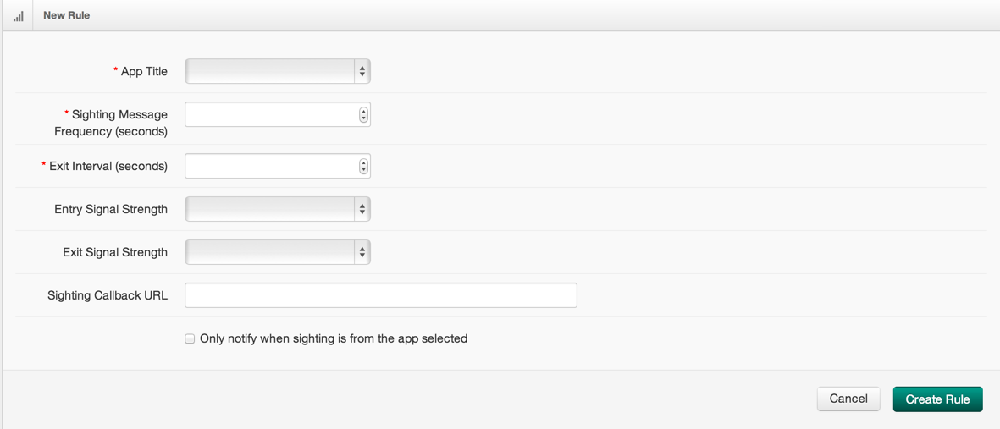

Based on Bluetooth Low Energy (BLE) beacons that provide finer grain proximity context.
Gimbal Proximity is currently available for iOS™ and is supported by all iOS™ devices that support BLE. This includes iPhone 4s or later, iPad 3rd gen and later, and iPod 5th gen and later.
Work is actively in progress on Android™ and Gimbal Proximity will release an SDK for Android™ soon.
The Gimbal Proximity Beacon is a BLE powered device that provides context about proximity and also ambient temperature. They broadcast a rolling encrypted code to ensure only users with the correct privileges can see the beacon's information. The beacons are configured to transmit at a rate that optimizes reactiveness on applications and battery-life of the beacons. They come in two form factors: Series 10 and Series 20.
Note Across all documentation and SDKs the terms 'Beacon' and 'Transmitter' are interchangeableSeries 10 are small devices measuring no more than 1" x 0.125" x 1.5" (L x W x H). These beacons are powered by a 3V CR2032 cell battery that lasts for about 3 months. These by default transmit at a rate of 645ms.
Series 20 are meant to be affixed to a location with industrial tape or screws. These beacons are much larger, 3.75" x 3.125" x 0.875" (L x W x H) than the Series 10 and are powered by 4 x AA batteries which last up to a year without replacement. These beacons can be affixed inside or outside as they are weather proof and by default transmit at a rate of 100ms.
Applications that are using the Gimbal Proximity SDK are able to detect beacons which are in close proximity. Depending on the visibility level of the application and ownership of the beacon, more information about the beacon (including a given name, temperature and RSSI value) can be displayed. Below are some terms and information to give you a solid background on the Proximity Development Environment so you can provide a quality user experience.

A sighting occurs when a Proximity Enabled Application receives a BLE packet from a proximate beacon. Depending on the visibility of the application, the Gimbal Proximity SDK notifies the application of the sighting. It will contain information about the event such as: RSSI value, Beacon Name, Icon Url, Battery Level, and Temperature. The application can then react to the sighting by showing a coupon deal, displaying information about the current location, or giving a customized greeting.
The Gimbal Proximity SDK, in addition to notifying the application, also notifies the Gimbal Manager Servers periodically of all sightings. The Gimbal Manager Servers can then provide analytics data to third-party developer servers through a REST interface.
Sightings passed to the application are real-time and can be referred to as client-side sightings. Sightings received by the Gimbal Manager Servers can be referred to as server-side sightings. These sightings are not real-time and are meant for analytics, such as historical sightings of beacons.
A common use case of Proximity is to treat a beacon as a micro-fence that triggers arrival and departure events. This allows a developer to know when a user is near a particular location and for how long they dwelled. This concept is referred to as a Visit in the SDK.
The life cycle of a visit is:
A visit has the following characteristics that affect the life cycle:
Much like sightings, there are client-side visits and server-side visits. Client-side visits are real-time events. The visit characteristics can be configured via the SDK. Server-side visits are not real-time as the SDK periodically posts sightings to the Gimbal Server to preserve battery life. They can further be impacted by the device's network connectivity. A developer can tune server-side visits via rules.
A rule gives a developer the ability to receive notifications of server-side visits. Depending on the application's visibility, when the SDK sights a beacon, it sends this sighting to the Gimbal Manager Server. It will then determine if the sighting matches a developer's rule. Upon a rule match, the Gimbal Manager Server notifies the developer's server of visit events through the configured "Sighting Callback URL."
To create a rule, visit the Gimbal Manager and navigate to the Proximity->Rules section. Click on "New Rule" to see the screen below:

The characteristics of a rule are as follows:
While creating a new Proximity API Key you can set your application's visibility options. These options determine the ability of your application to sight beacons and also how the server matches rules for server-side visits.
There are three visibility options (Private, Authorized, Public) and for these visibilities you have the option of allowing anonymous users to detect your (the developer's) beacons. The roles involved in understanding visibility are: Developer, OAuthed User, Anonymous User. Here are some useful terms to help understand how visibility impacts an application.
Application Types
User Roles
Beacon Types
Visibility Types
This checkbox ensures that a Developer's beacon can be sighted by the application being created whether or not the application uses an OAuth Session.
Important If you are creating an Non-OAuth Application you will likely want to check this option so that your application will see your beacons.
The following tables describe the possible scenarios when an Non-OAuth Application is in proximity to a beacon.
| Visibility | |||
|---|---|---|---|
| Developer's Beacon | Private | Authorized | Public |
| Client-Side Sightings | Yes* | Yes* | Yes* |
| Server-Side Visits | No | No | Yes |
| Visibility | |||
|---|---|---|---|
| Other Beacon | Private | Authorized | Public |
| Client-Side Sightings | No | No | No |
| Server-Side Visits | No | No | Yes |
Important The "Yes*" assumes that the "Allow Anonymous Users to Detect Your Beacons" checkbox is enabled
The following tables describe the possible scenarios when an OAuth Enabled Application is in proximity to a beacon.
| Visibility | |||
|---|---|---|---|
| Developer's Beacon | Private | Authorized | Public |
| Client-Side Sightings | Yes | Yes | Yes |
| Server-Side Visits | Yes | Yes | Yes |
| Visibility | |||
|---|---|---|---|
| User Beacon | Private | Authorized | Public |
| Client-Side Sightings | Yes | Yes | Yes |
| Server-Side Visits | Yes | Yes | Yes |
| Visibility | |||
|---|---|---|---|
| OAuthed Beacon | Private | Authorized | Public |
| Client-Side Sightings | No | Yes | Yes |
| Server-Side Visits | No | Yes | Yes |
| Visibility | |||
|---|---|---|---|
| Other Beacon | Private | Authorized | Public |
| Client-Side Sightings | No | No | No |
| Server-Side Visits | No | No | No |
When a Gimbal Proximity Enabled application created by another developer sees your beacon, the application will not be able to sight your beacon but it may create a server-side visit if the application chose Public visibility. Here is a table to describe these scenarios:
| Visibility | |||
|---|---|---|---|
| Developer's Beacon | Private | Authorized | Public |
| Client-Side Sightings | No | No | No |
| Server-Side Visits | No | No | Yes |
| Visibility | |||
|---|---|---|---|
| OAuthed Beacon | Private | Authorized | Public |
| Client-Side Sightings | No | No | No |
| Server-Side Visits | No | No | Yes |
They Gimbal Proximity SDK is designed to work while applications are in the background, however, behavior in background mode is platform dependent.
Platform specific steps to enable background mode and test results can be found here: